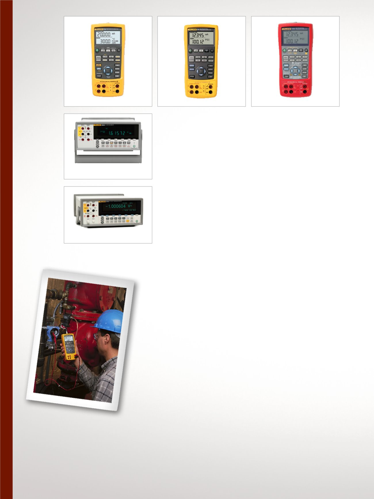

6
Elektrische Kalibrierung, Multifunktionskalibrierung und mA-Schleifenkalibrierung
kalibrator 726 mit
erweiterten Funktionen
Speziell für die Prozessindustrie
konzipiert, deckt eine Vielzahl von
Anwendungen ab und verfügt über
vielseitige Funktionen und hohe
Genauigkeit. Bietet alle Funktionen
des unten beschriebenen Modells
725 plus:
•
Erweiterte Genauigkeit
•
Impulsgeber- und
Impulszählerfunktionen
•
Druckschalterprüfung
•
Fehlerberechnung in %
•
NIST-rückführbare Kalibrierung
Multifunktionsprozess
kalibrator 725
Ein leistungsstarker und
benutzerfreundlicher Feldkalibrator
zum Prüfen und Kalibrieren nahezu
aller Prozessparameter.
•
Messen von Volt- und
mA-Werten, RTDs,
Thermoelementen, Frequenzen
und Widerständen zum Prüfen
von Sensoren und Transmittern
•
Geben/Simulieren von Volt- und
mA-Werten, Thermoelementen,
RTDs, Frequenzen, Widerständen
und Druck zum Kalibrieren
von Transmittern
•
Messen/Geben von Druck
mit einem beliebigen der 29
Druckmodule aus der Fluke
700Pxx-Baureihe
•
mA-Geber mit gleichzeitiger
Druckmessung beim
Prüfen von Ventilen und
Strom-Druckwandlern
•
NIST-rückführbare Kalibrierung
Eigensicherer Multifunktions-
prozesskalibrator 725EX
Benutzerfreundlicher, eigensicherer
Feldkalibrator, der die Kalibrierung
und Instandhaltung nahezu aller
Prozessinstrumente ermöglicht
– auch wenn möglicherweise
explosive Gase vorhanden sind.
•
ATEX II 1 G Ex ia IIB 171 °C KEMA
04ATEX 1303X
•
Konformität gemäß I.S.
-Klasse I, Gruppen B-D der
Kategorie 1, 171 °C
•
Messen von Volt- und mA-
Werten, RTDs, Thermoelementen,
Frequenzen und Widerständen
•
Geben oder Simulieren von Volt
DC- und mA-Werten, RTDs,
Thermoelementen, Frequenzen
und Widerständen
•
Messen/Geben von Druck mithilfe
von einem von acht Fluke-
Druckaufnehmern vom
Typ 700PEX
•
NIST-rückführbare Kalibrierung
Digitalmultimeter 8808A
Vielseitiges Multimeter für
Fertigungs-, Entwicklungs- und
Kundendienstanwendungen.
•
5,5-stellige Auflösung
•
Grundgenauigkeit bei
Gleichspannung von 0,015 %
•
Duales Display
•
NIST-rückführbare Kalibrierung
Digitalmultimeter mit hoher
Genauigkeit 8845A/8846A
Genauigkeit und Flexibilität für Labor-
oder Systemanwendungen.
•
6,5-stellige Auflösung
•
Basisgenauigkeit bei Gleichspan-
nung bis zu 0,0024 %
•
Duales Display
•
/C-Modelle enthalten
Kalibrierzertifikat
725Ex
8808A
8845A/8846A
726
725